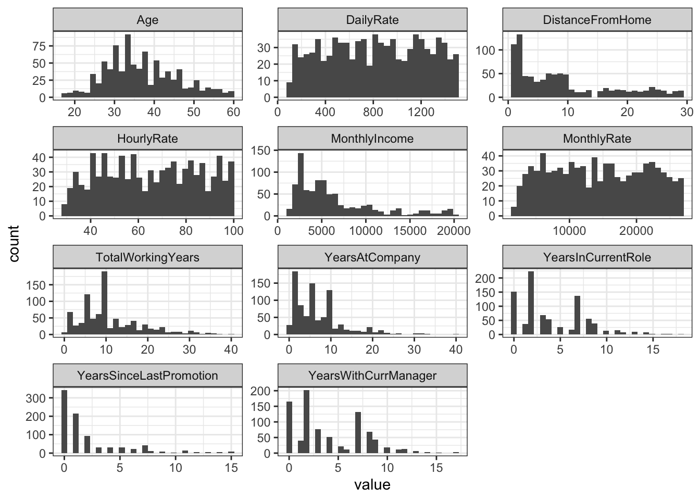
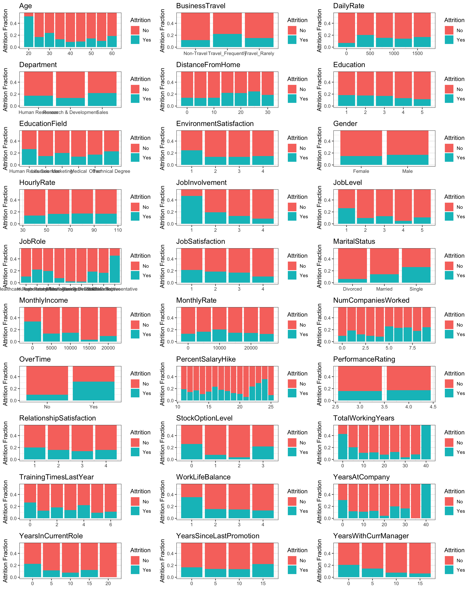
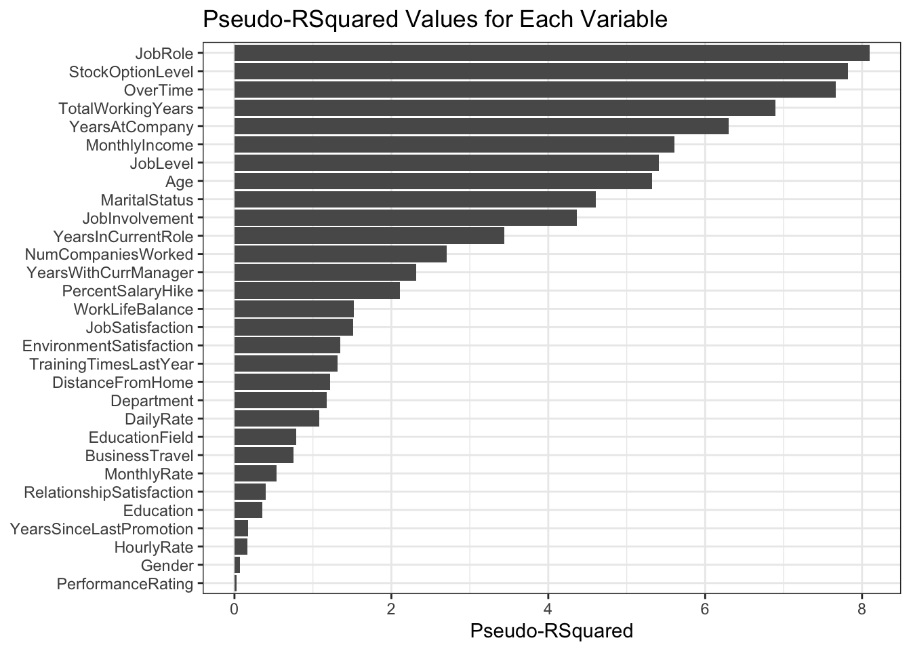
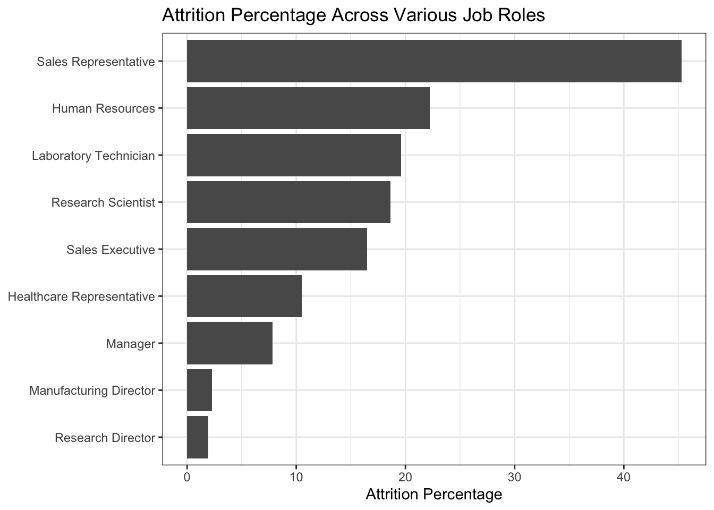
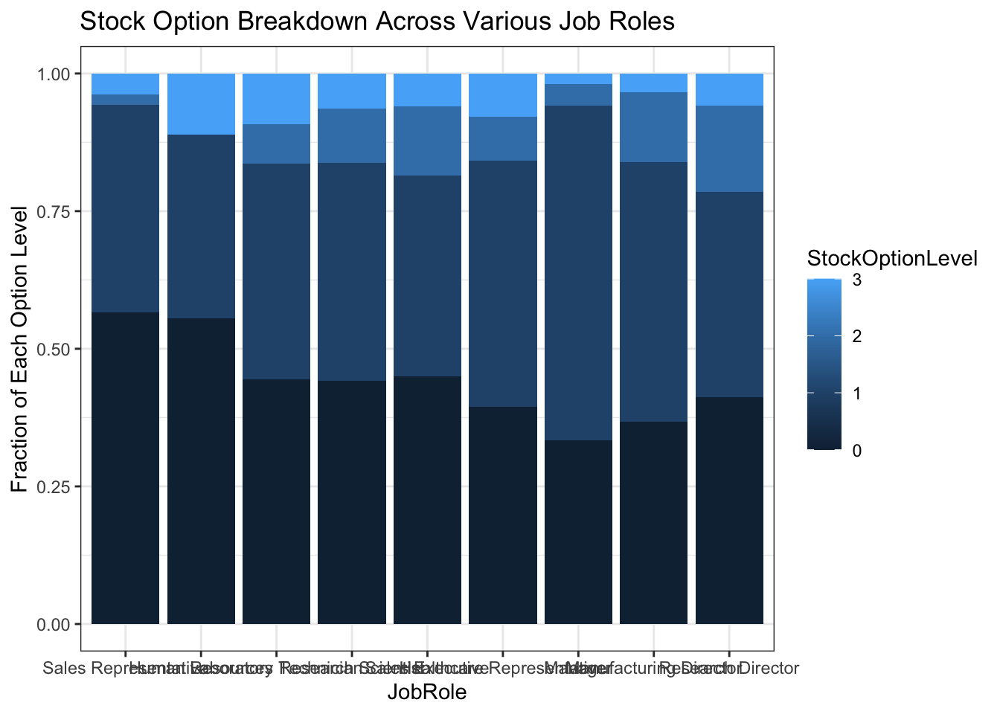
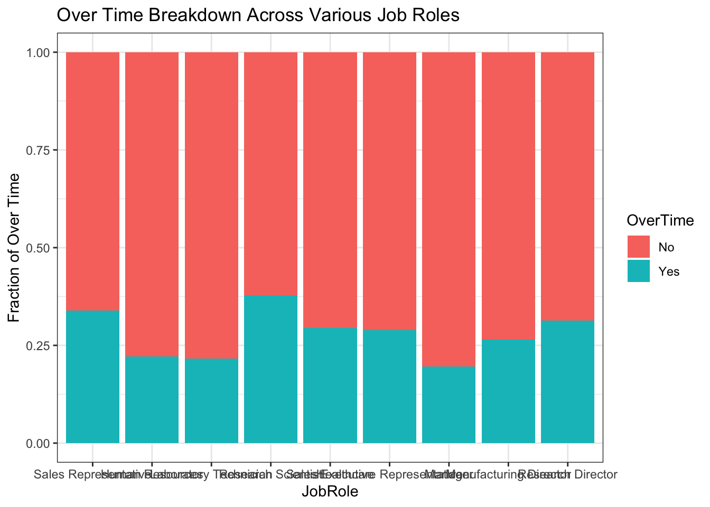
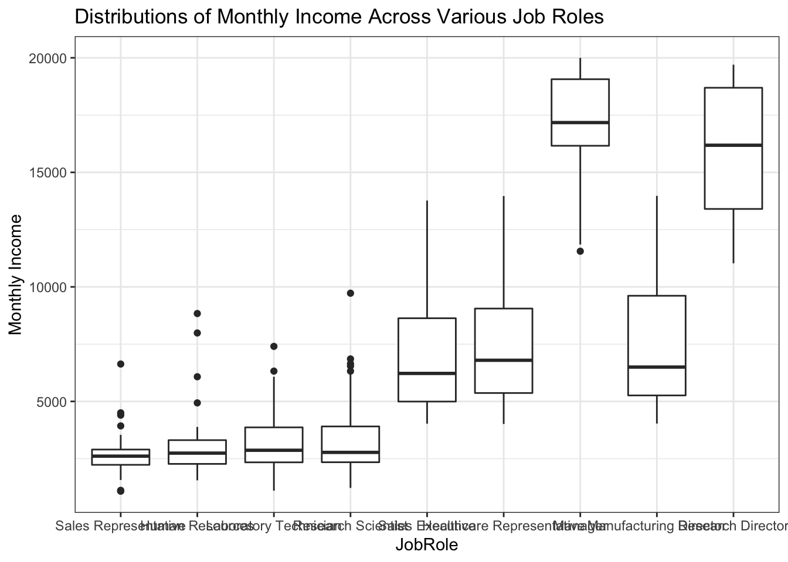
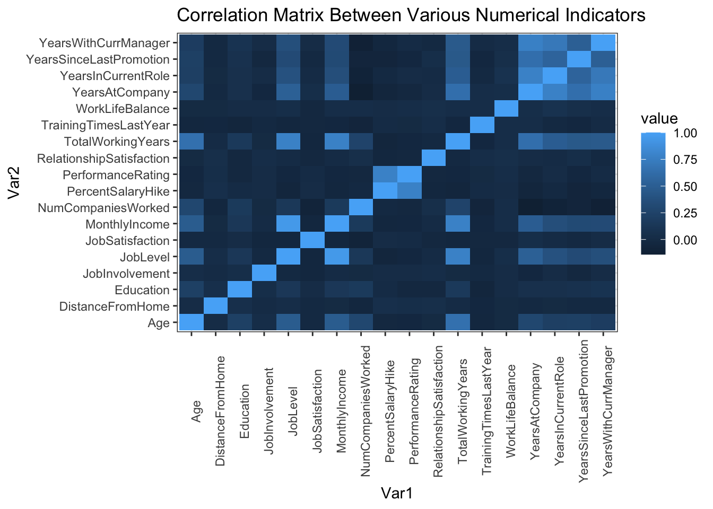
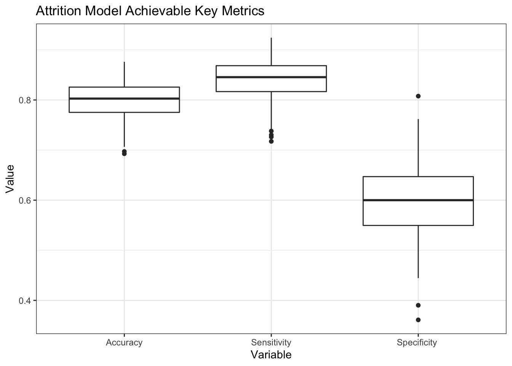
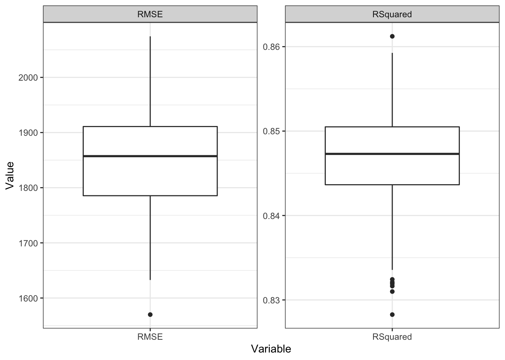

library(tidyverse)
library(broom)
library(gridExtra)
library(reshape2)
library(class)
library(caret)
library(e1071)
theme_set(theme_bw())Employee Attrition
An Analysis of Factors Leading to Employee Turnover
A link to my youtube video discussing this analysis can be found here
Introduction
The specific goals of this analysis are to:
Identify the top three factors that contribute to attrition.
Learn about any job role specific trends that may exist in the data set (e.g., “Data Scientists have the highest job satisfaction”).
Provide any other interesting trends and observations from the analysis.
Build models to predict attrition and salaries and then utilizing those models on a blind data set.
Executive Summary
Upon completing this analysis, it was learned that the top 3 factors contributing to employee attrition were:
- Job Role
- Stock Option Level
- Over Time
This information was obtained by determining the Pseudo-RSquared parameter for each variable in the data set. The Pseudo-RSquared parameter is a comparison of the likelihood for an outcome given the data as compared to a reference or null model. In this case the null model was the breakdown of attrition across the entire data set, which was roughly 16%.
Next, a naive-bayes model was constructed using the top 16 variables as ranked by the Pseudo-RSquared. This allowed for a model that achieved an accuracy of 80%, a sensitivity of 84%, and a specificity of 61%.
Finally, a linear regression model was used with Age, Job Role, Years at Company, and Stock Option variables to achieve an RSquared of 0.85 and a root mean squared error of $1,850.
Libraries and Data Loading
employeeData = read_csv("https://raw.githubusercontent.com/ayule89/SMU_DDS_CaseStudy2/main/Data/CaseStudy2-data.csv")1. Identifying the top three factors that contribute to attrition
How many of the 870 employees in the data actually left? There were 140 out of 870 employees (16%) that left.
employeeData |> count(Attrition)# A tibble: 2 × 2
Attrition n
<chr> <int>
1 No 730
2 Yes 140There are a number of variables that could attribute to employee attrition. We will first visually screen each of the variables to look for potential leading indicators. The full list of variables includes:
colnames(employeeData) [1] "ID" "Age"
[3] "Attrition" "BusinessTravel"
[5] "DailyRate" "Department"
[7] "DistanceFromHome" "Education"
[9] "EducationField" "EmployeeCount"
[11] "EmployeeNumber" "EnvironmentSatisfaction"
[13] "Gender" "HourlyRate"
[15] "JobInvolvement" "JobLevel"
[17] "JobRole" "JobSatisfaction"
[19] "MaritalStatus" "MonthlyIncome"
[21] "MonthlyRate" "NumCompaniesWorked"
[23] "Over18" "OverTime"
[25] "PercentSalaryHike" "PerformanceRating"
[27] "RelationshipSatisfaction" "StandardHours"
[29] "StockOptionLevel" "TotalWorkingYears"
[31] "TrainingTimesLastYear" "WorkLifeBalance"
[33] "YearsAtCompany" "YearsInCurrentRole"
[35] "YearsSinceLastPromotion" "YearsWithCurrManager" Before investigating attrition across each variable, some of the numerical scales will need to put into various bins to make analysis easier. In order to determine appropriate bins, we’ll first plot histograms of the numerical variables, which include: Age, DailyRate, DistanceFromHome, HourlyRate, MonthlyIncome, MonthlyRate, TotalWorkingYears, YearsAtCompany, YearsInCurrentRole, YearsSinceLastPromotion, YearsWithCurrManager.
employeeData |>
select(Age, DailyRate, DistanceFromHome, HourlyRate, MonthlyIncome, MonthlyRate, TotalWorkingYears, YearsAtCompany, YearsInCurrentRole, YearsSinceLastPromotion, YearsWithCurrManager) |>
pivot_longer(cols = everything(), names_to = "column", values_to = "value") |>
ggplot(aes(x = value)) +
geom_histogram() +
facet_wrap(~column, scales = 'free', ncol = 3)`stat_bin()` using `bins = 30`. Pick better value with `binwidth`.
Based on visually inspecting the histograms, the following bins for various numerical variables will be used below. In addition, we’ll change the Attrition values from strings to doubles with Yes/No being 1/0 respectively.
- Age (5 years)
- Daily rate (400 dollars)
- Distance from home (5 miles)
- Hourly rate (20 dollars)
- Monthly income (5,000 dollars)
- Monthly rate (5,000 dollars)
- Total working years (5 years)
- Years at company (5 years)
- Years in current role (5 years)
- Years since last promotion (5 years)
- Years under current manager (5 years)
employeeDataBinned = employeeData |>
mutate(
Age = round(Age/5)*5,
DailyRate = round(DailyRate/400)*400,
DistanceFromHome = round(DistanceFromHome/5)*5,
HourlyRate = round(HourlyRate/20)*20,
MonthlyIncome = round(MonthlyIncome/5000)*5000,
MonthlyRate = round(MonthlyRate/5000)*5000,
TotalWorkingYears = round(TotalWorkingYears/5)*5,
YearsAtCompany = round(YearsAtCompany/5)*5,
YearsInCurrentRole = round(YearsInCurrentRole/5)*5,
YearsSinceLastPromotion = round(YearsSinceLastPromotion/5)*5,
YearsWithCurrManager = round(YearsWithCurrManager/5)*5)Now we’ll go through and create plots of each variable showing the breakdown between attrition to visually look for any strong relationships
# Function to create a plot showing the breakdown in attrition for a given variable across it's possible values
findAttritionBreakdown = function(df, colName) {
df |>
group_by(!!sym(colName)) |>
count(Attrition) |>
ungroup() |>
ggplot(aes(x = !!sym(colName), y = n, fill = Attrition)) +
labs(title = colName, x = NULL, y = "Attrition Fraction") +
geom_col(position = "fill") +
coord_cartesian(ylim = c(0, 0.55))
}
# Test the function
#findAttritionBreakdown(employeeDataBinned, "DistanceFromHome")
cols = colnames(employeeData)
# Drop columns that we don't want to include in the analysis (ID, Attrition, EmployeeCount, EmployeeNumber, Over18, StandardHours)
cols = cols[c(-1, -3, -10, -11, -23, -28)]
# Create a list of plots across all of the columns using the map function from the purr package
plots = map(cols, function(col) findAttritionBreakdown(employeeDataBinned, col))
# Display plots on one page
grid.arrange(grobs = plots, ncol = 3)
Based on examining the plots above, the following key variables were identified as likely having higher impacts on employee attrition:
- Age
- BusinessTravel
- DistanceFromHome
- Education
- EnvironmentSatisfaction
- JobInvolvment
- JobRole
- JobSatisfaction
- MaritalStatus
- MonthlyIncome
- NumCompaniesWorked
- OverTime
- StockOptionLevel
- TotalWorkingYears
- WorkLifeBalance
- YearsAtCompany
- YearsWithCurrManager
In order to determine the top 3 factors quantitatively, we will calculate the Pseudo-R2 value for each predictor. This is based on a similar analysis that can be found here.
The main idea is that we first start with a Null model, or a baseline model, that can be used to determine the likelihood of attrition. Once that is established, then additional factors can be evaluated against this Null model using their likelihood to look for improvements or increases in the likelihood. In this case, because the likelihoods can be quite large, loglikelihood values will be used.
The Null model in this case will simply be the LogLikelihood of attrition in the entire data set or -383.8.
calcLogLikelihoodData = function(data){
no = select(filter(data, Attrition == 0), n)
yes = select(filter(data, Attrition == 1), n)
if(dim(yes)[1] == 0 || dim(no)[1] == 0) {
return(tibble(n = c(0)))
}
else{
p = yes/(yes + no)
log(p^yes * (1-p)^no)
}
}
employeeDataBinnedWithQuantitativeAttrition = employeeDataBinned |>
mutate(Attrition = ifelse(Attrition == "Yes", 1, 0))
nullModel = calcLogLikelihoodData(count(employeeDataBinnedWithQuantitativeAttrition, Attrition))
calcPseudoRSquared = function(var){
employeeDataBinnedWithQuantitativeAttrition |>
group_by(!!sym(var)) |>
count(Attrition) |>
group_modify(function(group, blah) calcLogLikelihoodData(select(group, Attrition, n))) |>
ungroup() |>
select(n) |>
sum() |>
(function(ll) (1-ll/nullModel$n)*100)()
}
#Test
#calcPseudoRSquared("Age")
# Calculate Pseudo-R2 for all variables
pseudoRSquared = tibble("Variable" = cols) |>
rowwise() |>
mutate(PseudoRSquared = calcPseudoRSquared(Variable))Display the pseudo-RSquared values for each variable, sorting by the highest to more easily identify top factors.
pseudoRSquared |>
ggplot(aes(x = PseudoRSquared, y = fct_reorder(Variable, PseudoRSquared))) +
geom_col() +
labs(x = "Pseudo-RSquared", y = NULL, title = "Pseudo-RSquared Values for Each Variable")
Based on the analysis above, the top 3 factors influencing employee attrition are:
- Job Role
- Stock Option Level
- Over Time
The next 3 factors following the top 3 are:
- Total Working Years
- Years At Company
- Monthly Income
2. Learn about any job role specific trends that may exist in the data set
We know that Job Role is our number one predictor of employee attrition. Looking closer at various reported job roles, it is clear that sales type positions see much larger amounts of turnover while managing and director type roles see very little.
employeeData |>
group_by(JobRole) |>
summarize(AttritionPct = 100*sum(ifelse(Attrition == "No", 0, 1))/n()) |>
ggplot(aes(x = AttritionPct, y = reorder(JobRole, AttritionPct))) +
geom_col() +
labs(title = "Attrition Percentage Across Various Job Roles", x = "Attrition Percentage", y = NULL)
Knowing that stock options, working over time, and monthly income are also key indicators of attrition, we can use those to better understand why sales positions see higher attrition.
# Looking at stock options
employeeDataBinnedWithQuantitativeAttrition |>
mutate(JobRole = factor(JobRole, levels = c("Sales Representative", "Human Resources", "Laboratory Technician", "Research Scientist", "Sales Executive", "Healthcare Representative", "Manager", "Manufacturing Director", "Research Director"))) |>
group_by(JobRole) |>
count(StockOptionLevel) |>
ungroup() |>
ggplot(aes(x = JobRole, y = n, fill = StockOptionLevel)) +
geom_col(position = "fill") +
labs(title = "Stock Option Breakdown Across Various Job Roles", y = "Fraction of Each Option Level")
# Looking at over time
employeeDataBinnedWithQuantitativeAttrition |>
mutate(JobRole = factor(JobRole, levels = c("Sales Representative", "Human Resources", "Laboratory Technician", "Research Scientist", "Sales Executive", "Healthcare Representative", "Manager", "Manufacturing Director", "Research Director"))) |>
group_by(JobRole) |>
count(OverTime) |>
ungroup() |>
ggplot(aes(x = JobRole, y = n, fill = OverTime)) +
geom_col(position = "fill") +
labs(title = "Over Time Breakdown Across Various Job Roles", y = "Fraction of Over Time")
# Looking at monthly income
employeeData |>
mutate(JobRole = factor(JobRole, levels = c("Sales Representative", "Human Resources", "Laboratory Technician", "Research Scientist", "Sales Executive", "Healthcare Representative", "Manager", "Manufacturing Director", "Research Director"))) |>
ggplot(aes(x = JobRole, y = MonthlyIncome)) +
geom_boxplot() +
labs(title = "Distributions of Monthly Income Across Various Job Roles", y = "Monthly Income")
Analyzing Sales Representatives individually we see that they rank very highly in all of the categories that contribute the most to attrition. They generally have a proportionally smaller amount of stock options, they work slightly more over time than most other positions with the exception of research scientist, and they are the lowest paid.
3. Provide any other interesting trends and observations from your analysis
Let’s look at some of the quantitative variables to look for any interesting trends.
employeeData |>
select(Age, DistanceFromHome, Education, JobInvolvement, JobLevel, JobSatisfaction, MonthlyIncome, NumCompaniesWorked, PercentSalaryHike, PerformanceRating, RelationshipSatisfaction, TotalWorkingYears, TrainingTimesLastYear, WorkLifeBalance, YearsAtCompany, YearsInCurrentRole, YearsSinceLastPromotion, YearsWithCurrManager) |>
cor() |>
round(2) |>
melt() |>
ggplot(aes(x=Var1, y=Var2, fill=value)) +
geom_tile() +
theme(axis.text.x = element_text(angle = 90)) +
labs(title = "Correlation Matrix Between Various Numerical Indicators")
From the above correlation heat map, we can make the following observations:
- Years at company, years in current role, years since last promotion, and years with current manager are all closely related as they all generally give an indication of how long a particular employee has been at the current job
- High performance rating is correlated with higher salary hikes
- There were no strong correlations for work life balance, which could mean there are other non-numerical indicators for work life balance, or it just depends on the individual
4. Build models to predict attrition and salary
To predict attrition, a naive Bayes model was used with the goal of reaching the highest accuracy while preserving at least 60% for sensitivity and specificity. After cross-validating the model using a 75/25 train/test split and utilizing 16 of the top 30 predicting variables, the respective achievable accuracy, sensitivity, and specificity was found to be 80%, 84%, and 61%.
employeeDataForPrediction = employeeData |>
select(-ID, -EmployeeCount, -EmployeeNumber, -Over18, -StandardHours)
set.seed(1234)
evaluateModel = function() {
l = length(employeeDataForPrediction$Attrition)
indicies = sample(seq(1:l), round(0.75*l))
train = employeeDataForPrediction[indicies,]
test = employeeDataForPrediction[-indicies,]
model = naiveBayes(Attrition ~ JobRole + StockOptionLevel + OverTime + TotalWorkingYears + YearsAtCompany + MonthlyIncome + JobLevel + Age + MaritalStatus + JobInvolvement + YearsInCurrentRole + NumCompaniesWorked + YearsWithCurrManager + PercentSalaryHike + WorkLifeBalance + JobSatisfaction, train)
predictions = predict(model, select(test, JobRole, StockOptionLevel, OverTime, TotalWorkingYears, YearsAtCompany, MonthlyIncome, JobLevel, Age, MaritalStatus, JobInvolvement, YearsInCurrentRole, NumCompaniesWorked, YearsWithCurrManager, PercentSalaryHike, WorkLifeBalance, JobSatisfaction))
results = confusionMatrix(table(predictions, test$Attrition))
acc = as.numeric(results$overall[1])
sen = sensitivity(table(predictions, test$Attrition))
spc = specificity(table(predictions, test$Attrition))
return(tibble("Accuracy" = c(acc), "Sensitivity" = c(sen), "Specificity " = c(spc)))
}
results = tibble("Accuracy" = c(NULL), "Sensitivity" = c(NULL), "Specificity " = c(NULL))
for (variable in 1:200) {
results = rbind(results, evaluateModel())
}
results |>
pivot_longer(cols = everything(), names_to = "Variable", values_to = "Value") |>
ggplot(aes(x = Variable, y = Value)) +
geom_boxplot() +
labs(title = "Attrition Model Achievable Key Metrics")
Predicting attrition on the blind test set and then outputting to a csv file.
blindTestData = read_csv("https://raw.githubusercontent.com/ayule89/SMU_DDS_CaseStudy2/main/Data/CaseStudy2CompSet%20No%20Attrition.csv")
model = naiveBayes(Attrition ~ JobRole + StockOptionLevel + OverTime + TotalWorkingYears + YearsAtCompany + MonthlyIncome + JobLevel + Age + MaritalStatus + JobInvolvement + YearsInCurrentRole + NumCompaniesWorked + YearsWithCurrManager + PercentSalaryHike + WorkLifeBalance + JobSatisfaction, employeeDataForPrediction)
predictions = predict(model, select(blindTestData, JobRole, StockOptionLevel, OverTime, TotalWorkingYears, YearsAtCompany, MonthlyIncome, JobLevel, Age, MaritalStatus, JobInvolvement, YearsInCurrentRole, NumCompaniesWorked, YearsWithCurrManager, PercentSalaryHike, WorkLifeBalance, JobSatisfaction))
blindTestResults = tibble("ID" = blindTestData$ID, "Attrition" = predictions)
write_csv(blindTestResults,"/Users/andrewyule/Dropbox/Personal/SMU MSDS/03 - Doing Data Science/SMU_DDS_CaseStudy2/Case 2 Predictions Yule Attrition.csv")To predict salaries, a linear regression model was used. The goal was to achieve a high R Squared value and minimal root mean squared error (RMSE), while keeping the number of predictors as low as possible. The variables, Age, Job Role, Years At Company, and Stock Options were found to be good in predicting salary and lead to a model with an RSquared of around 0.85 and a RMSE of $1,850.
rmse = function(actual, predicted) {
sqrt(mean((actual - predicted)^2))
}
set.seed(1234)
evaluateModel = function() {
l = length(employeeData$MonthlyIncome)
indicies = sample(seq(1:l), round(0.75*l))
train = employeeData[indicies,]
test = employeeData[-indicies,]
model = lm(MonthlyIncome ~ Age + JobRole + YearsAtCompany + StockOptionLevel + PerformanceRating, data = train)
predictions = predict(model, test)
tibble("RSquared" = summary(model)$r.squared, "RMSE" = rmse(test$MonthlyIncome, predictions))
}
results = tibble("RSquared" = c(NULL), "RMSE" = c(NULL))
for (variable in 1:200) {
results = rbind(results, evaluateModel())
}
results |>
pivot_longer(cols = everything(), names_to = "Variable", values_to = "Value") |>
ggplot(aes(x = Variable, y = Value)) +
geom_boxplot() +
facet_wrap(~Variable, scales = "free")
Predicting attrition on the blind test set and then outputting to a csv file.
blindTestData = read_csv("https://raw.githubusercontent.com/ayule89/SMU_DDS_CaseStudy2/main/Data/CaseStudy2CompSet%20No%20Salary.csv")Rows: 300 Columns: 35
── Column specification ────────────────────────────────────────────────────────
Delimiter: ","
chr (9): Attrition, BusinessTravel, Department, EducationField, Gender, Job...
dbl (26): ID, Age, DailyRate, DistanceFromHome, Education, EmployeeCount, Em...
ℹ Use `spec()` to retrieve the full column specification for this data.
ℹ Specify the column types or set `show_col_types = FALSE` to quiet this message.model = lm(MonthlyIncome ~ Age + JobRole + YearsAtCompany + StockOptionLevel + PerformanceRating, data = employeeData)
predictions = predict(model, blindTestData)
blindTestResults = tibble("ID" = blindTestData$ID, "MonthlyIncome" = predictions)
write_csv(blindTestResults,"/Users/andrewyule/Dropbox/Personal/SMU MSDS/03 - Doing Data Science/SMU_DDS_CaseStudy2/Case 2 Predictions Yule Salary.csv")